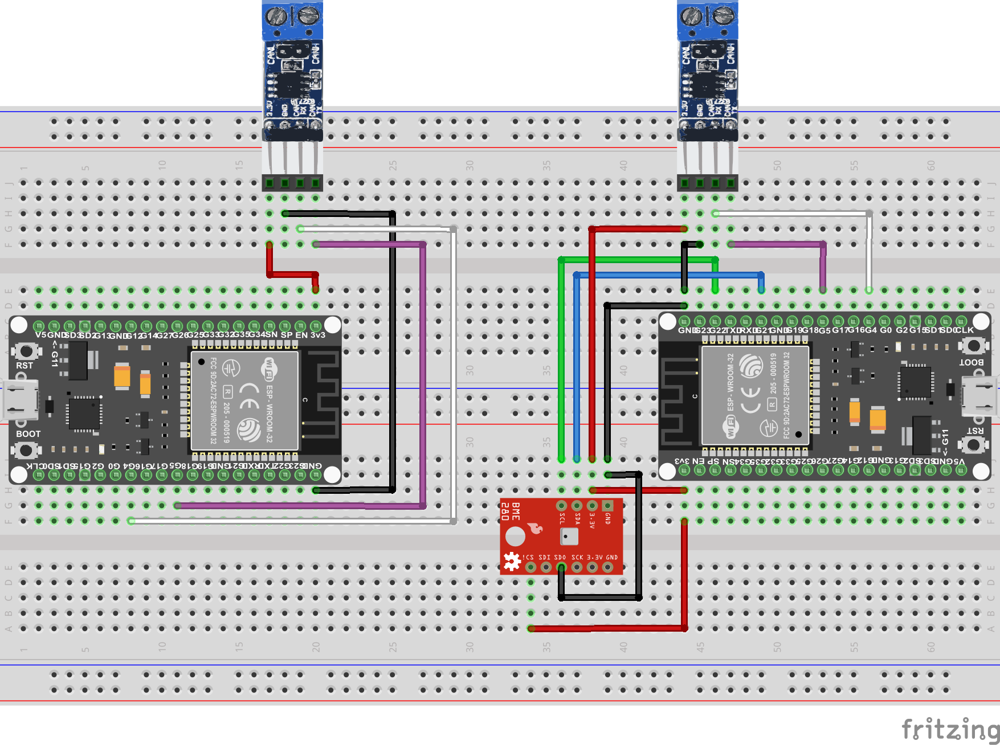
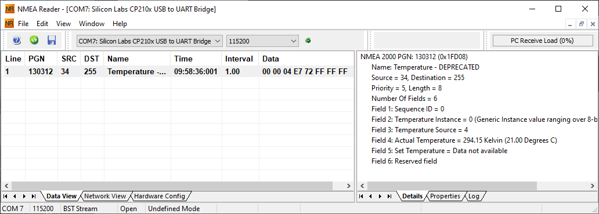

Das BME280-Modul von Bosch ist ein Multi-Sensor-Modul, das Temperatur, Luftfeuchte und barometrischen Druck messen kann.
Für die Beispiele mit dem BME280, ist das Steckbrett mit dem BME280-Modul zu erweitern. Das sollte dann so aussehen:

Wir nutzen den BME280 mit dem I2C-Bus. Dazu ist 3,3 Volt, GND und SDA (GPIO 21) und SCL (GPIO 22) zu verbinden. Wenn das verwendete Modul etwas anders aussieht, macht das nichts. Es sind unterschiedliche Module im Umlauf.
Wenn das BME280-Board einen herausgeführten CSB-Anschluss hat, diesen bitte mit 3,3 Volt verbinden. Das wählt dann den I2C-Bus aus (anstatt SPI).
Falls das Modul einen SDO-Anschluss hat, bitte diesen mit GND verbinden. Damit legen wir die I2C-Adresse 0x76 fest.
Zur Nutzung des BME280-Moduls müssen wir nun noch die Adafruit-BME-280-Bibliothek installieren. Das geht recht einfach, mit dem Arduino-IDE Bibliotheksverwalter.
Hierzu im Menü “Sketch”, “Bibliothek einbinden” und dann “Bibliotheken verwalten…” auswählen. Das startet den Bibliotheksverwalter. In das Suchfeld “BME280” eintragen, dann “Adafruit BME280 Library” auswählen und “Installieren” drücken.
Nun installieren wir das erste Beispielprogramm auf dem rechten ESP32. Dazu wird der ESP32 mit USB verbunden und in der Arduino-IDE der neue serielle USB-Port ausgewählt. Dann in das Verzeichnis “NMEA2000-BME280-1” des heruntergeladenen und entpackten Repositories wechseln und auf "NMEA2000-BME280-1.ino" doppelklicken.
Das Beispielprogramm ist nun in der Arduino-IDE geladen. Um es auf den ESP32 zu übertragen und zu starten, wählen wir im Menü “Sketch” und dann “Hochladen”. Das Programm wird nun übersetzt (kompiliert) und dann auf den ESP32 übertragen.
Nun wollen wir sehen, ob alles funktioniert. Dazu wählen wir im Menü “Werkzeuge” und dann “Serieller Monitor”. Die Baudrate (rechts unten im Fenster) setzen wir auf “115200 Baud”.
Jetzt sollten wir mehrere Zeilen sehen, in denen die Temperatur angezeigt wird: “09:46:27.022 -> Temperature: 20.7 °C”
Falls keine Temperatur angezeigt wird, ist irgendwo ein Fehler passiert. Entweder in der Verkabelung oder das BME280-Modul nutzt eine abweichende Adresse für den I2C-Bus.
Beides müssen wir dann kontrollieren und beheben. Falls die Verkabelung OK ist, suchen wir im Programm die Zeile 63:
if (!bme.begin(0x76)) {
Den Wert “0x76” ersetzen wir dann mit “0x77”. Danach den Sketch speichern und erneut hochladen.
Je nach Beschaltung auf der Platine, kann ein BME280 eine von beiden Adressen haben.
Spätestens jetzt sollte im Seriellen Monitor die Temperatur angezeigt werden.
Im nächsten Schritt wollen wir sehen, ob unser kleines NMEA2000-Netzwerk auch funktioniert.
Mit dem NMEA-Reader können wir Daten vom NMEA2000-Netzwerk anzeigen. Dazu starten wir das zuvor installierte Programm “NMEAReader”
Im Reader wählen wir oben den zuvor notierten seriellen Port vom linken ESP32 aus und setzen auch hier die Baudrate auf 115200 Baud.
Die Anzeige sollte dann in etwa so aussehen:

Eventuell ist beim ersten Mal die PGN-Zeile anzuwählen und rechts im Fenster der Reiter “Details” auszuwählen.
Wenn die Anzeige so aussieht, dann erst einmal “Herzlichen Glückwunsch”!" Es funktioniert alles.
Die Daten werden vom rechten Modul korrekt gesendet, unser NMEA2000-Bus funktioniert, und das linke Modul hat die Daten korrekt empfangen. Der dort installierte (ActisenseListenerSender-ESP32) Sketch nimmt die Daten vom NMEA2000-Bus auf und sendet sie über die serielle Schnittstelle an das Programm NMEA-Reader. Das Programm dekodiert die Daten und zeigt sie an.
Doch was bedeutet die Anzeige?
Schön das es funktioniert hatte. Aber wie hat das Beispielprogramm das nun gemacht?
Das Beispielprogramm ist in der Programmierprache C und C++ geschrieben. Eine guter Einstieg speziell zu C und Arduino ist hier zu finden. Für C++ eignet sich diese Seite ganz gut.
Der Aufbau unserer Beispielprogramme in der Arduino-IDE ist im Prinzip immer gleich.
Kommen wir nun zum Inhalt unseres ersten Beispielprogramms:
#define ESP32_CAN_TX_PIN GPIO_NUM_5 // Set CAN TX port to 5
#define ESP32_CAN_RX_PIN GPIO_NUM_4 // Set CAN RX port to 4
#include <Arduino.h>
#include <Preferences.h>
#include <NMEA2000_CAN.h> // This will automatically choose right CAN library and create suitable NMEA2000 object
#include <N2kMessages.h>
// Include files for BME280
#include <Wire.h>
#include <Adafruit_Sensor.h>
#include <Adafruit_BME280.h>
// Set time offsets
#define SlowDataUpdatePeriod 1000 // Time between CAN Messages sent
#define TempSendOffset 0
Als Erstes sehen wir hier die Definition zweier Konstanten, welche die GPIO-Ports für CAN TX und CAN RX festlegen. Die Ports 5 und 4 sind die Ports, die wir auch auf dem Steckbrett verbunden haben. Die Definition muss hier vor den Include-Dateien für die NMEA2000-Bibliotheken erfolgen, da die Werte dort zur Konfiguration genutzt werden.
Kommen wir nun zur Definition von globalen Variablen und Objekten. Globale Variablen heißen “global”, weil sie in allen Funktionen verwendet werden können. Im Gegensatz zu “globalen” sind “lokale” Variablen, die in Funktionen definiert werden, nur in der jeweiligen Funktion bekannt und nutzbar.
Adafruit_BME280 bme; // I2C
int NodeAddress; // To store last Node Address
Preferences preferences; // Nonvolatile storage on ESP32 - To store LastDeviceAddress
// Set the information for other bus devices, which messages we support
const unsigned long TransmitMessages[] PROGMEM = {130312L, // Temperature
0
};
Als Erstes wird ein Objekt “bme” vom Typ “Adafruit_BME280” erstellt. Diese Objekt enthält die notwendigen Methoden/Funktionen zur Verwendung des BME280-Moduls.
Die nächsten beiden Zeilen sind für die Verwaltung der eigenen Node-Adresse notwendig. Dazu kommen wir später noch.
Mit “TransmitMessages[]” wird eine Liste mit PGNs angelegt, die vom Modul gesendet werden. Die Liste enthält erst einmal nur den PGN 130312. Später kommen weitere hinzu.
void setup() {
uint8_t chipid[6];
uint32_t id = 0;
int i = 0;
// Init USB serial port
Serial.begin(115200);
delay(10);
Die Funktion setup() wird einmalig beim Start des Programms ausgeführt.
Als Erstes werden lokale Variablen definiert, die in setup() zur Berechnung der eindeutigen Modul-ID genutzt werden.
Als Nächstes wird die serielle Schnittstelle (USB) mit der Baud-Rate 115200 gestartet. Das ist notwendig, um den Seriellen Monitor der Arduino-IDE nutzen zu können.
// Init BME280 I2C address depends on sensor 0x76 or 0x77.
if (!bme.begin(0x76)) {
Serial.println("Could not find a valid BME280 sensor, check wiring!");
while (1) {}
}
Dann wird das BME280-Modul initialisiert und gestartet. In bme.begin() wird die genutzte I2C-Adresse mit angegeben. Je nach verwendetem Modul kann es notwendig sein, die Adresse zu ändern. Wenn der Start nicht (! = logisch nicht Wahr) erfolgreich war, wird über die serielle Schnittstelle eine Fehlermeldung ausgegeben und das Programm gestoppt (while (1) {}).
// Reserve enough buffer for sending all messages.
NMEA2000.SetN2kCANMsgBufSize(8);
NMEA2000.SetN2kCANReceiveFrameBufSize(150);
NMEA2000.SetN2kCANSendFrameBufSize(150);
Im nächsten Schritt reservieren wir genügend Pufferspeicher zur Bearbeitung der CAN-Nachrichten und PGNs.
// Generate unique number from chip id
esp_efuse_read_mac(chipid);
for (i = 0; i < 6; i++) id += (chipid[i] << (7 * i));
Mit den obigen Zeilen wird eine eindeutige “id” aus der WLAN-Netzwerkadresse (MAC = Media Access Control) des ESP32-Moduls berechnet.
// Set product information
NMEA2000.SetProductInformation("1", // Manufacturer's Model serial code
100, // Manufacturer's product code
"My Sensor Module", // Manufacturer's Model ID
"1.0.2.25 (2019-07-07)", // Manufacturer's Software version code
"1.0.2.0 (2019-07-07)" // Manufacturer's Model version
);
Jedes regelkonforme Modul am MNEA2000-Bus muss Produkt- und Geräte-Informationen über sich selbst bereitstellen.
Die konkreten Inhalte der Produkt-Information sind für die korrekte Funktion nicht relevant. Sie dienen nur der Information und können auf anderen Geräten (z.B. NMEA2000-Plotter) angezeigt werden. Im NMEA-Reader werden diese Informationen übrigens im Reiter “Properties” angezeigt. Allerdings nur, wenn das ESP32 Modul nach Anschluss des Readers neu gestartet wurde (RST-Taste) und der PGN 60928 “ISO Address Claim” vom Modul gesendet wurde.
// Set device information
NMEA2000.SetDeviceInformation(id, // Unique number. Use e.g. Serial number.
132, // Device function=Analog to NMEA 2000 Gateway. See codes on http://www.nmea.org/Assets/20120726%20nmea%202000%20class%20&%20function%20codes%20v%202.00.pdf
25, // Device class=Inter/Intranetwork Device. See codes on http://www.nmea.org/Assets/20120726%20nmea%202000%20class%20&%20function%20codes%20v%202.00.pdf
2046 // Just choosen free from code list on http://www.nmea.org/Assets/20121020%20nmea%202000%20registration%20list.pdf
);
Als Nächstes werden die Geräte-Informationen festgelegt. In folgender Reihenfolge:
Wir hätten auch die Kombination 75/130 für einen Temperatursensor nutzen können. Da wir aber noch andere Werte wie Luftfeuchte und Druck hinzufügen wollen, ist dies laut Standard nicht möglich. Das hätte individuelle NMEA2000-Nodes erfordert. Warum auch immer.
Die zu verwendenden Codes sind auf der NMEA.Org-Webseite zu finden.
Für andere Geräte (zum Beispiel für ein WLAN-Gateway) müssen auch andere Codes genutzt werden.
preferences.begin("nvs", false); // Open nonvolatile storage (nvs)
NodeAddress = preferences.getInt("LastNodeAddress", 34); // Read stored last NodeAddress, default 34
preferences.end();
Serial.printf("NodeAddress=%d\n", NodeAddress);
Im nächsten Schritt setzen wir die Node-Adresse unseres Moduls. Als Standard-Adresse legen wir die Nummer 34 fest. Falls es zuvor einen Adresskonflikt gegeben hatte (zwei Geräte wollten die gleiche Adresse 34 nutzen), handeln beide Geräte eindeutige Adressen aus. Es gehört zum NMEA2000-Standard, dass alle Geräte sich die letzte ausgehandelte Adresse merken und beim nächsten Start auch verwenden, um einen erneuten Adresskonflikt zu vermeiden.
Der ESP32 hat einen nichtflüchtigen Speicher (auch Flash-Memory oder EEPROM genannt). Aus diesem Speicher lesen wir einen zuvor gegebenenfalls gespeicherten Wert für “LastNodeAddress” und weisen diesen der globalen Variablen “NodeAddress” zu. Wir werden später bei der Funktion CheckSourceAddressChange() noch einmal darauf zurückkommen.
// If you also want to see all traffic on the bus use N2km_ListenAndNode instead of N2km_NodeOnly below
NMEA2000.SetMode(tNMEA2000::N2km_NodeOnly, NodeAddress);
NMEA2000.ExtendTransmitMessages(TransmitMessages);
Im nächsten Schritt setzen wir den Geräte-Modus und die gerade ermittelte Node-Adresse. Der Geräte-Modus legt generelle Funktionsweisen des Moduls fest. Details sind sind in der NMEA2000-Bibliotheks-Referenz nachzulesen.
Für unseren Temperatur-Sensor ist “N2km_NodeOnly” die richtige Wahl, da uns die anderen Informationen auf dem Bus im Moment nicht interessieren.
Mit “ExtendTransmitMessages” erweitern wir die zu sendenden PGNs mit der weiter oben festgelegten Liste “TransmitMessages”.
NMEA2000.Open();
delay(200);
Als Letztes in der Funktion setup() starten wir die die NMEA2000-Bibliothek und warten kurz (200 ms).
Als Nächstes sehen wir uns die Hilfsfunktionen etwas genauer an.
Wir starten mit den Funktionen zur Steuerung des Sende-Intervalls:
// Functions to control send interval and time offets
//*****************************************************************************
bool IsTimeToUpdate(unsigned long NextUpdate) {
return (NextUpdate < millis());
}
//*****************************************************************************
unsigned long InitNextUpdate(unsigned long Period, unsigned long Offset = 0) {
return millis() + Period + Offset;
}
//*****************************************************************************
void SetNextUpdate(unsigned long & NextUpdate, unsigned long Period) {
while ( NextUpdate < millis() ) NextUpdate += Period;
}
Für ungeübte C-Programmierer sind die Funktionen wohl recht schwer zu verstehen. Wir gehen hier auch nicht im Detail darauf ein. Wir werden aber in der nächsten Funktion sehen, wie sie zu nutzen sind.
void SendN2kTemperature(void) {
static unsigned long SlowDataUpdated = InitNextUpdate(SlowDataUpdatePeriod, TempSendOffset);
tN2kMsg N2kMsg;
double Temperature;
if ( IsTimeToUpdate(SlowDataUpdated) ) {
SetNextUpdate(SlowDataUpdated, SlowDataUpdatePeriod);
Temperature = bme.readTemperature();
Serial.printf("Temperature: %3.1f °C \n", Temperature);
// Definition from N2kMessages.h
// void SetN2kPGN130312(tN2kMsg &N2kMsg, unsigned char SID, unsigned char TempInstance, tN2kTempSource TempSource,
// double ActualTemperature, double SetTemperature=N2kDoubleNA);
// tN2kTempSource is defined in N2kTypes.h
// Set N2K message
SetN2kPGN130312(N2kMsg, 0, 0, N2kts_MainCabinTemperature, CToKelvin(Temperature), N2kDoubleNA);
// Send message
NMEA2000.SendMsg(N2kMsg);
}
}
Mit der obigen Funktion SendN2kTemperature(void) bauen wir die zu sendenden NMEA2000-Daten zusammen und senden sie auf den NMEA2000-Bus.
Als Erstes werden drei lokale Variablen definiert:
Dann wird geschaut, ob es Zeit für das nächste Senden ist.
Mit SetNextUpdate(SlowDataUpdated, SlowDataUpdatePeriod); wird gleich der nächste Update-Zeitpunkt definiert.
Mit “Temperature = bme.readTemperature();” lesen wir die aktuelle Temperatur vom BME280-Modul (in Grad Celsius)
Mit “SetN2kPGN130312(N2kMsg, 0, 0, N2kts_MainCabinTemperature, CToKelvin(Temperature), N2kDoubleNA);” bauen wir die NMEA2000-Nachricht zusammen und mit “NMEA2000.SendMsg(N2kMsg);” senden wir die Nachricht auf den NMEA2000-Bus.
Die verschiedenen PGNs und eventuell nötige Datentypen sind in den beiden Dateien “N2kMessages.h” und “N2kTypes.h” festgelegt.
Für das hier verwendete PGN130312 (Zeile 1334) werden folgende Argumente erwartet:
Die NMEA2000-Nachricht ist nun erfolgreich zusammengesetzt.
Sie kann mit “NMEA2000.SendMsg(N2kMsg);” nun an den NMEA2000-Bus gesendet werden.
NMEA2000 erwartet übrigens alle Werte konform zu den definierten SI-Einheiten.
Das bedeutet Temperatur in Kelvin, Geschwindigkeit in m/s. Winkel in Radiant (rad) und Druck in Pascal usw. Hilfreiche Umrechnungen sind in der Datei N2kMessages.h definiert.
Andere PGNs werden wir in späteren Beispielen verwenden.
Kommen wir nun zur vorletzten Funktion in diesem Beispiel:
void CheckSourceAddressChange() {
int SourceAddress = NMEA2000.GetN2kSource();
if (SourceAddress != NodeAddress) { // Save potentially changed Source Address to NVS memory
preferences.begin("nvs", false);
preferences.putInt("LastNodeAddress", SourceAddress);
preferences.end();
Serial.printf("Address Change: New Address=%d\n", SourceAddress);
}
}
Wie bereits bei den Variablen beschrieben, muss jedes NMEA2000-Konformes Gerät auf Adresskollisionen reagieren können.
Das machen wir mit der Funktion CheckSourceAddressChange(). Hier prüfen wir, ob sich die eigene Node-Adresse aufgrund eines Adresskonflikts geändert hat (SourceAddress != NodeAddress). Falls sich die Adresse geändert hatte, speichern wir die neue Adresse im Flash-Speicher des ESP32. Beim nächsten Start des Moduls wird die geänderte Adresse dann auch gleich wieder verwendet, um einen erneuten Adresskonflikt zu vermeiden.
Die letzte Funktion ist die Funktion loop(), die automatisch und wiederkehrend immer wieder aufgrufen wird.
void loop() {
SendN2kTemperature();
NMEA2000.ParseMessages();
CheckSourceAddressChange();
// Dummy to empty input buffer to avoid board to stuck with e.g. NMEA Reader
if ( Serial.available() ) {
Serial.read();
}
}
Hier noch ein Hinweis: In anderen Arduino-Programmen sieht man häufig die Verwendung von delay() um einen Zeitraum abzuwarten. Bei NMEA2000-Programmen ist es keine gute Idee, in loop() oder daraus aufgerufenen Funktionen, delay() zu verwenden. Das würde den regelmäßigen Aufruf von NMEA2000.ParseMessages() verzögern, und kann zu Problemen mit der zügigen Verarbeitung der Nachrichten führen.
Das war es mit dem ersten Beispielprogramm.
Im nächsten Schritt werden wir das BME280-Beipielprogramm erweitern, um auch die Luftfeuchtigkeit mit einem eigenen PGN zu senden.
BME280 Teil 2